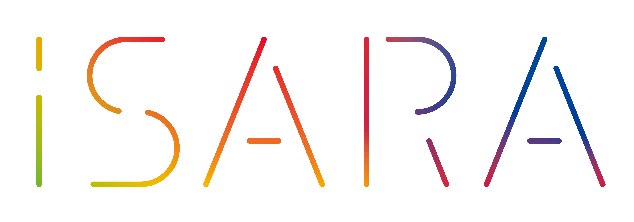

基本的な
プログラミングスキル

バンコクのノマドエンジニア育成講座
プログラミングで
人生の安定を手に入れよう
バンコクのノマドエンジニア育成講座
iSara[イサラ]
まずは20日間で、
月10万円稼げるスキルを手に入れよう。
※受講料金は実質0円です。詳しくは資料請求をどうぞ。
第６期生:2019年11月25日 ~ 2019年12月14日＊締め切りました
第７期生:2020年2月17日 ~ 2020年3月7日＊締め切りました
第８期生:2021年内に開催予定＊資料請求受付中です
エンジニアとして本当の自由を手に入れるためには？
エンジニア需要の高まりに伴い、プログラミングスクールが増えています。
しかしそこでの学習の先は、 提携して決められた就職先に就職すること。
これで本当にいいのですか？
日本人エンジニアはアメリカと較べて給料が格段に低い。
その理由がここにあり、 エンジニアは自分の給料をコントロールすべきなのです。
スキルを身につけたエンジニアは、人生をコントロールすることでより自由に。
そこで必要なのが「稼ぐ力」です。
ABOUT
ノマドエンジニア育成講座
iSara[イサラ]とは
「 稼ぐこと 」にフォーカスしたWebエンジニア育成講座です。
稼げるエンジニアに必要な5つのスキルとは？
基本的な
プログラミングスキル

案件獲得に必要な
営業力

見積もり作成から
納品までの知識

自分の付加価値を
高めるスキル

フリーランス同士の
横のつながり
基礎的なプログラミングスキルは無料で学べる時代。
iSaraでは、基礎知識学習は事前課題とチャットサポートのみ。
STEP.1
【バンコク渡航前１ヶ月】
事前課題で基礎知識を学ぶ
STEP.2
【バンコク到着後】
実践的に稼ぐことに特化した学習
STEP.3
【バンコク帰国後】
講座実施後の案件獲得サポート
スキルアップしてもフリーランスエンジニアとして食べていくことは難しい。
フリーランスには プログラミングスキル以外が大切。